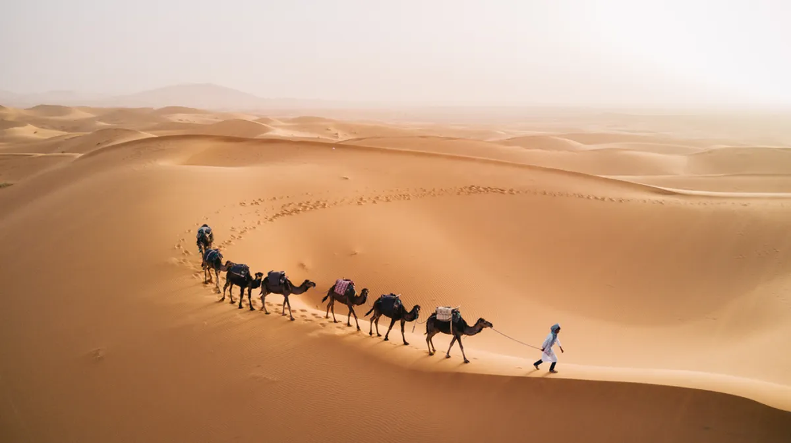

|
Um habitat é uma área ecológica ou ambiental que é habitada por uma
determinada
espécie de animal, planta ou outro organismo. O habitat está relacionado ao lugar, ou
ambiente físico em que esse organismo vive e onde pode encontrar alimento,
abrigo,
proteção e companheiros para reprodução.
|
||
|
Um habitat é composto de fatores físicos como solo, umidade, intervalo de
temperatura e intensidade da luz, bem como fatores bióticos, como a
disponibilidade de alimentos e a presença ou ausência de predadores. |
|||
|
Poucas criaturas fazem das prateleiras de gelo da Antártica seu habitat. Topos de montanha
No topo de montanhas pode parecer que nada além de neve será encontrado, porém, flora
e
fauna podem se adaptar e sobreviver em algumas dessas regiões. DesertosO que caracteriza os desertos comumente é a falta de chuva e as temperaturas extremas, uma vez que o calor escaldante do dia pode ser substituído por um frio intenso no período noturno. Devido a esses fatores, um número limitado de espécies de fauna e flora é visto nessas regiões, as quais são adaptadas para vivem em condições adversas, escassez de água e paisagens estéreis. O solo do deserto é pouco fértil, sendo comumente composto por areia e rochas, e isso se dá por serem regiões onde mais água evapora do solo do que é substituído por precipitação.  |
|
Os habitats podem mudar com o tempo seja por processos naturais ou atividades
humanas. O primeiro está relacionado às mudanças geomorfológicas (movimento das
placas tectônicas, terremoto, erosão, deslizamento de terras etc.) e fatores climáticos
(incêndios naturais, tempestades, inundações etc.).
|